Материала по монтажу в Blender не очень много, ввиду того, что эта тема не так уж и популярна. «А ну зачем оно надо, когда монтажек пруд пруди» — вот мысль, которая возникает в первую очередь, и, в принципе, с ней можно и согласиться. Но если вам не нравится «зоопарк прог», или вам просто нравится работать в блене, думаю, материал покажется достаточно интересным.
В свое время я начинал работать с программой из «титанов» монтажа, не помню точно с какой. Однако, видео я делал из фоток, и с задачей программа не справлялась — то тут пропали фото, то там исчезли. Кое-как собрал, вобщем мне не понравилось. Секвенсер блендера на этом фоне — образец стабильности, еще ни разу не подводил. Единственное что не хватало, иногда хочется видеть превьюшки и по ним кидать уже файлы на монтажный стол. В новой версии я нашел неплохой выход из положения — поддерживается grag-and-drop, в том числе файлов. Можно открыть файловый менеджер и кидать файлы grag-and-drop'ом прямо в секвенсер.
В этом мануале нет информации о художественной составляющей монтажа — рассмотрены только инструменты для работы. Я могу порекомендовать вам для изучения творческих апектов это видео для начала:
Лекция «Монтаж» — Элёржон Кимсанов
Версия 2, 6окт 2014 +Gausan Blur +File output setup +UI
1. Начало работы
Итак, мы решили склеить видео, с чего начнем?
Если вы клеите результат композа или рендера, хороший вариант будет сделать исходники в PNG. Вообще сохранять отдельные кадры и клеить их уже на этапе монтажа — хорошая идея:
Так что если вы до сих пор рендерите в AVI — эта практика должна завершиться сегодня. Можно так же делать и JPG, они даже быстрее, но немного страдает качество. Вы можете сказать, что это незаметно, но все может вылезти на цветокоррекции. Потому все же рекомендую PNG.
Исходники с камеры нужно перекодировать монтажным кодеком. У меня есть статья про монтажный кодек, подробно здесь расписывать не буду.
Исходники готовы, Блендер открыт, а мы готовы к штурму! Сделайте любым образом окно секвенсера:
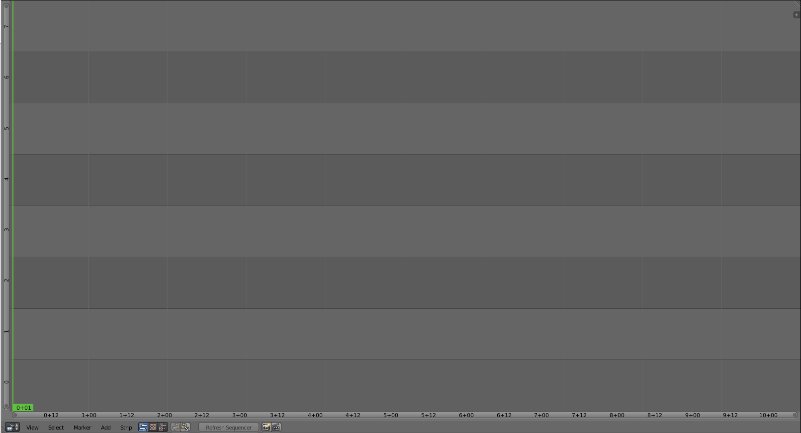
В преднастройках интерфейса есть «Video Editing». Вы можете использовать его, вместо моей настройки. Я использую свою, т.к. у меня 2 монитора и я скидываю управление ключами на второй.
Настроим все для работы.
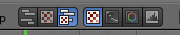
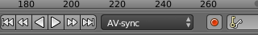
Одна из самых главных проблем у новичков лежит в настройке FPS (количество кадров в секунду). Они импортируют видео со звуком и видят, что видеоряд короче звукового. Дело в том, что звук в секвенсере измеряется в секундах, а видео в кадрах. Пока мы не настроим верно отношение количества кадров в секунду, видеоряд не будет совпадать со звуковым. Более подробно об этом в 6й части этого гида.
Настройки вывода видео.
Я рекомендую использовать такие настройки для финальной сборки:
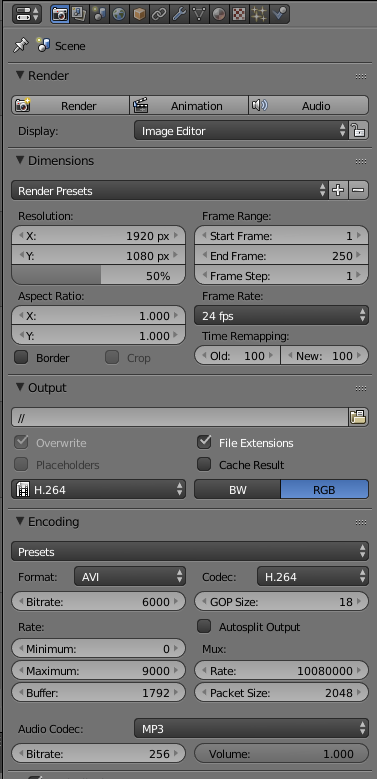
Если вы забудете выбрать аудиокодек, ваше видео будет без звука!
Итак, в блендере — нелинейный редактор. Что это значит? Это значит, что дорожки с видео, аудио и, что особо важно, эффектами накладываются друг на друга. Видно будет только те, что сверху — остальные в зависимости от того, что мы соорудим. Эту вещь нужно разобрать на конкретном примере. Загрузите в редактор два видео-фрагмента, из тех, что вы заготовили. Если под рукой ничего нет, сойдет просто пара картинок.
Материал, который мы загружаем, будет отображаться в виде «strip», или по-русски «полоски» или «дорожки». Я буду называть их дорожками или кусками, часто говорят «звуковая дорожка» или «видео дорожка». (В Блендере переведено как «Лента» — это очень поверхностный перевод, я считаю) Чтобы добавить дорожку в секвенсер, нажмите Shift+A или через меню Add (далее Image или Movie). Как вам удобно. Надеюсь, тут все просто.
Чтобы добавить серию PNG-картинок, просто выделите все картинки из папки (хоткей A), (надеюсь, каждая сцена у вас в отдельной папке). Картинки не будут вставляться поштучно, а вставятся просто дорожкой, отличающейся только цветом. Если видео у вас со звуком, появятся 2 дорожки, звук отдельно.
Дорожки выделяются как обычно в Блендере (ПКМ, если вы не настроили по-другому). Старайтесь попасть в серединку, если попадете в начало или конец и попробуете подвинуть — дорожка растянется.
Клавиша мыши, обратная выделению, перемещает бегунок текущего кадра (зеленая полоска).
Хоткей для того, чтобы двигать дорожки, надеюсь, вы догадались — G. Действуют даже оси X-Y, например, выбрав ось Y (СКМ или хоткей Y) можно переместить дорожку наверх, не подвинув её по времени.
Еще можно дублировать дорожки, нажав Shift+D. Или банально Ctrl+C, Ctrl+V. В секвенсере есть рамочка выделения, как и в 3D-View (хоткей B).
Расположите дорожки друг над другом, чуть внахлест:
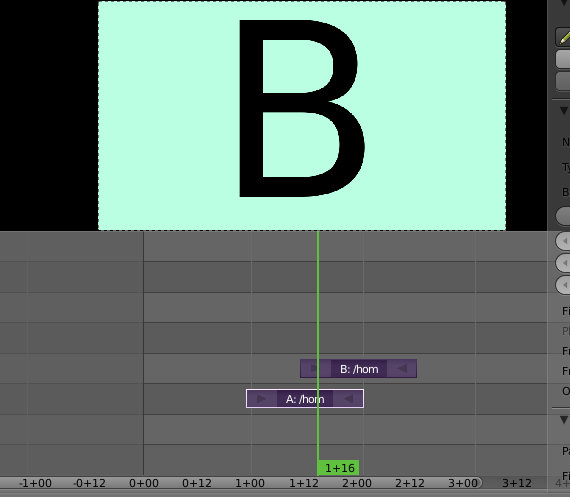
Передвигая зеленый бегунок убедитесь, что верхняя дорожка перекрывает нижнюю. Это похоже на слои в графическом редакторе? Пока все просто, теперь давайте по-сложнее. Выделите сначала первую дорожку, затем вторую, зажимая Shift (чтобы выделить одновременно 2 дорожки), затем Add→ Effect strip → Wipe. Если вы все сделали верно, у вас получится:
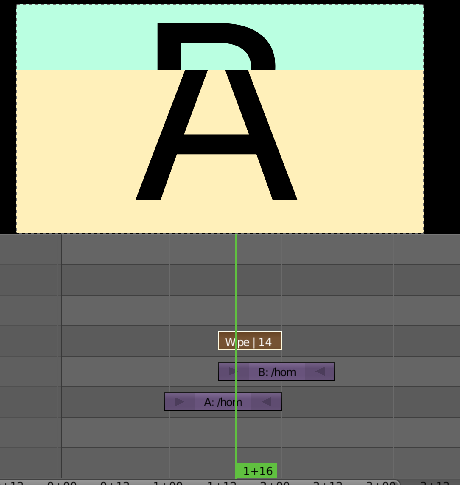
Да-да, эффект перехода в стиле «Звездных войн» появился отдельной дорожкой! Дальше — интереснее. Вы, конечно, не сможете подвинуть его по времени (он начинается от начала одного до конца другого), но можете переместить его вниз. В старых версиях это приводило к тому, что эффект перехода исчезал, поскольку был ниже по «монтажной иерархии». В новых версиях, видимо, людей решили лишить такой «головной боли» и эффект не исчезает, хотя с логикой это немного не соотносится. Но вот использовать эту новую дорожку в качестве основы для следующего эффекта — хотя бы в качестве эксперимента, это можно:
Переход «А→B» миксуем с «C»
Причем, что во что переходит, управляется не положением выше-ниже, а именно порядком выделения. Сначала выделяется первая по времени дорожка, потом — вторая. Тут надо просто запомнить.
Теперь разберем некоторые основные действия, которые можно выполнять помимо перемещения. Самое простое — изменить длительность. Справа и слева мы видим треугольнички, если выделить именно их, они подсветятся, а по G будут передвигаться, увеличивая или уменьшая длительность дорожки. Если видео будет короче, в конце вы увидите белесый цвет, который будет означать конец видеоряда. В этом месте будет просто последний кадр видеофрагмента.
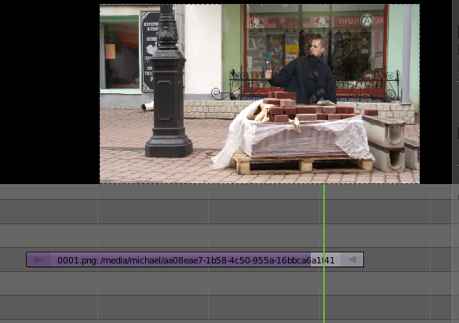
Я больше люблю укорачивать дорожки другим способом. Установите зеленый маркер текущего кадра где-нибудь посередине и нажмите K

Теперь у нас две дорожки, как если бы мы их разрезали ножом. При этом каждую можно увеличивать и уменьшать, в том числе в отрезанную область
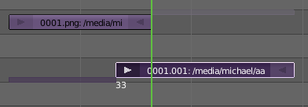
У нас есть еще Hard Trim (Shift+K). После его воздействия расширение дорожки происходит с белесой областью — статичным кадром, как будто видео здесь и кончается.
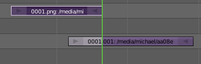
Такой способ резки тоже имеет значение, и мы разберем это в примерах. И, кстати, он не смертелен. Вы можете восстановить дорожку в панельке N:
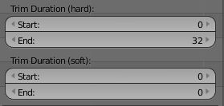
Итак, полученных знаний вполне достаточно, чтобы сделать вполне обычный монтаж. Далее разберем по главам как сделать то и то.
4. Как добавить текст
В секвенсере нет встроенных возможностей «напечатать» текст, потому откройте ваш любимый 2D-редактор (я использую для этого векторный редактор Inkscape) и сделайте картинку с текстом. При этом было бы здорово, чтобы размер картинки в точности соответствовал размеру видеоряда. Blender, конечно, отмасштабирует картинку, но вот сглаживание полетит к чертям.
Итак, есть несколько вариантов наложить текст.
Если у вас просто черный или белый текст, сделайте его на черном или белом фоне. Если вы добавите его в секвенсер, разумеется он перекроет видеоряд:
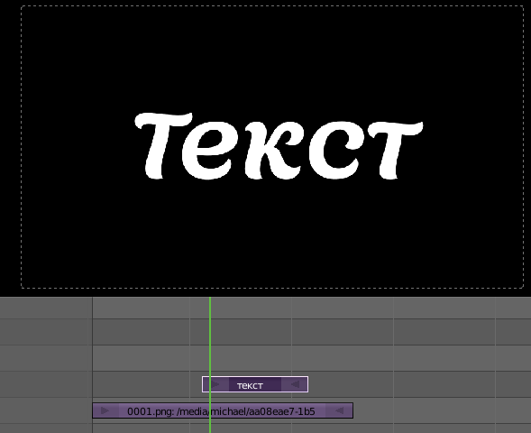
Зайдите на панель настроек N и поменяйте тип Blend на Add для белого текста или Multiply для черного.
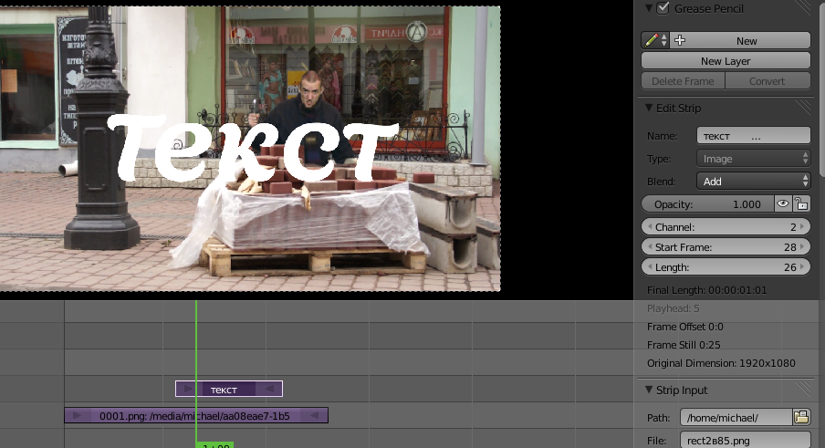
Это очень похоже на режим смешивания слоев в графическом редакторе, не правда ли? Естественно, если вы хотите сделать текст с тенью или какой-то цветной или объемный текст, такой способ смешивания не пройдет. Вам нужно сделать картинку с прозрачным фоном. Причем прозрачность не будет активна, пока вы не включите режим смешивания Alpha Over. Конечно, можно и белый текст сделать на прозрачном фоне и также смешать через Alpha Over, но Add и Multiply работает гораздо быстрее!
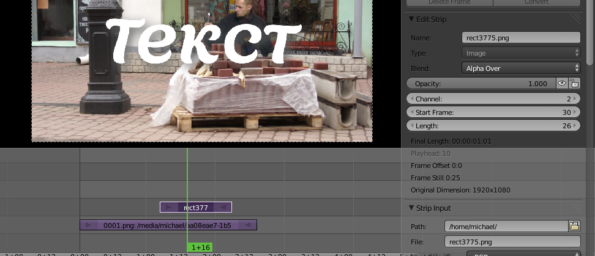
Переместите вашу дорожку с текстом в нужную позицию и расширьте, чтобы его можно было успеть прочитать. Не забывайте хоткей Alt+A — проиграть анимацию, он действует и в секвенсере. Теперь мы сделаем так, чтобы он плавно появлялся и исчезал. Перейдите в первый кадр дорожки (нужно зеленую полоску туда переместить), поставьте параметр Opacity на 0 и нажмите I, указывая курсором мыши на этот параметр. Затем через секунду поставьте значение 1 (или 0.7, чтобы текст был полупрозрачным) и не забудьте нажать I, если вы не включили автокейфрейминг. Затем еще два ключа для затухания надписи. Ключи можно редактировать как вполне обычные:
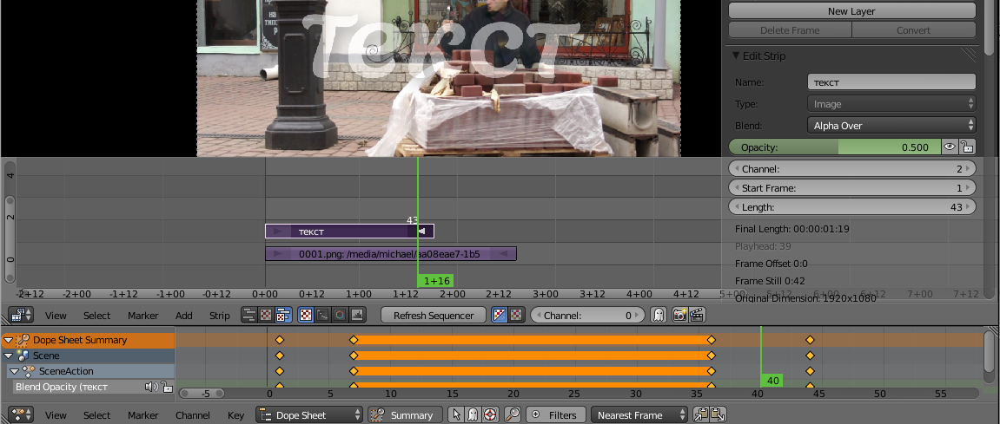
Единственное отличие от обычных ключей в том, что они перемещаются вместе с дорожкой. Было бы муторно, переместив дорожку по времени, еще и отыскивать ее ключи и перемещать их, не правда ли?
Чуть ниже вы найдете галочку Image Offset. Эта функция отменяет масштабирование видео под размер кадра, поэтому если вы напутали с размером картинки с текстом, то он отмасштабируется обратно к размеру 1к1. Анимируя офсет по Y, можно сделать финальные титры, идущие снизу-вверх, или любой другой сдвиг (можно двигать не просто картинки с текстом, но и видеофрагменты).
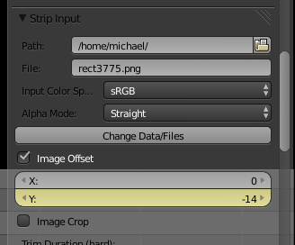
Кстати, если вы изменили исходную картинку с текстом, нажмите кнопку Refresh Sequencer, и картинка прогрузится заново. Refresh Sequencer может также пригодиться, если вы подвинули дорожку с прозрачностью — некоторые кадры закешировались, и показывают старый фон. Чтобы сбросить кеш кадров, нажмите кнопку Refresh Sequencer.
Мы разобрали в предыдущей главе 3 способа совмещения слоев — Add, Multiply и Alpha Over. Дальше разберем еще 2: по-умолчанию, у нас стоит способ совмещения (Blend) с типом Cross, он очень похож на первый в списке Replace. Отличие в том, что если мы зададим прозрачность (Opacity) меньше 1, то слой с типом смешивания Cross будет как бы просвечивать, т. е. смешиваться со слоем ниже, а Replace будет смешиваться с черным экраном, если просто выразиться, темнеть.
Фейды (когда экран плавно «гаснет») очень удобно делать с Replace.
Выберите дорожку и сделайте анимацию (Opacity). Даже если под дорожкой есть что-то еще, все равно будет затухание кадра — переход в черный цвет:
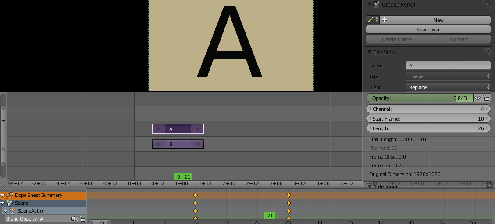
Говоря про черный экран, я немного привираю — на самом деле, это не черный, а прозрачный. Но при рендере в RGB (без прозрачности) будет черный цвет.
Теперь попробуем сделать переход из одной дорожки в другую. Расположим одну дорожку поверх другой и убедимся, что параметр Blend установлен на Cross. Думаю, не составит труда верно расположить ключи анимации:
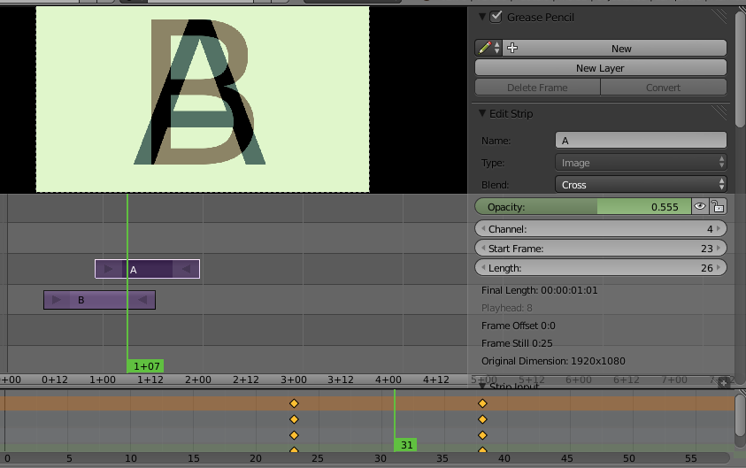
Тоже самое можно сделать с помощью Add → Effect Srtip → Cross или Gamma Cross. Ключи анимации не понадобятся, а в секвенсере появится новая дорожка эффекта:
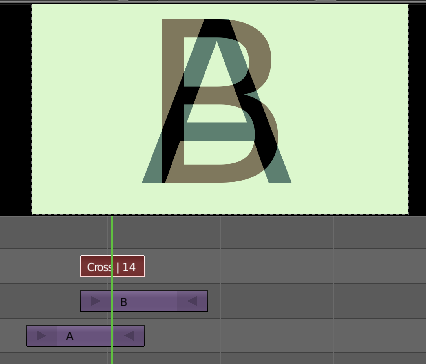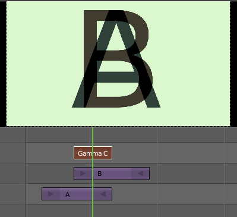
Как видите, они немного отличаются, на мой взгляд Gamma Cross приятнее. Выберите по порядку: сначала дорожку, из которой идет переход; потом в который. Если перепутаете порядок, переход не получится, точнее получится не то, что вы хотели.
Если вы перепутали дорожки, выберите дорожку перехода и нажмите C → Change Effect Input → A→B
Затем, когда 2 дорожки выделены, выберите Add → Effect Strip → (Gamma) Cross. Обратите внимание, что дорожку кросфейда (Gamma) Cross) нельзя подвинуть ни вперед, ни назад — она перемещается вместе с так называемыми Input Strips (далее просто инпутами) — теми дорожками, между которыми происходит плавный переход. Чтобы изменить длительность перехода, нужно перемещать исходные дорожки. Вы можете отодвинуть одну от другой, или укоротить их:
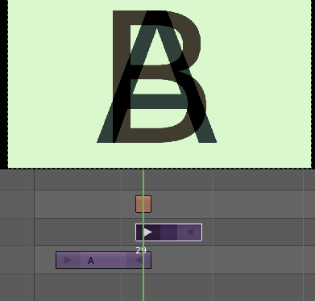
Часто бывает, что дорожки синхронизированы со звуком, поэтому их нужно именно укорачивать. Если мы передвигаем начало дорожки, кадры останутся на месте, а те, что были вначале — обрежутся.
За плавность перехода отвечает галочка Defaut Fade. Если мы отключим ее, то получим возможность управлять динамикой перехода, анимируя этот параметр:
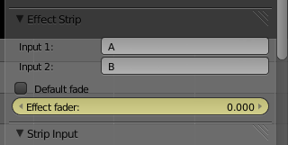
Кстати, иногда можно и не анимировать этот параметр, чтобы получить статичную полупрозрачность. Если с эффектом Cross это кажется бессмысленным, то вот c Wipe достаточно полезно: вы можете расположить два видео рядом (к примеру Было-Стало) и даже размыть границу между ними — это умеет Wipe.
Про Wipe мы уже говорили во второй части, заглянем в его настройки:
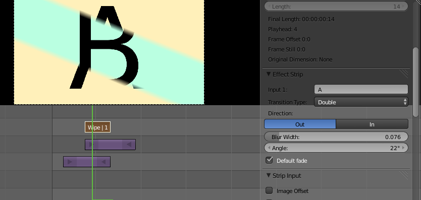
Тут есть несколько вариантов перехода и различные настройки, просто попробуйте их, остановив таймлайн на середине перехода, или зациклив анимацию. Подробно рассказывать о них не имеет смысла — все очень просто.
Разберем еще один Effect Strip — Color. Он единственный из подменю «Effect Strip» не требует инпутов. Это простой генератор однотонного фона, по умолчанию он черный, но можно настроить любой на панельке N. А затем его можно использовать как обычную дорожку с картинкой, например, сделать переход с помощью Wipe:
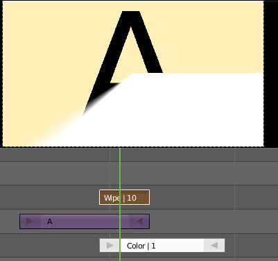
Одна из самых главных проблем у новичков лежит в настройке FPS (количество кадров в секунду). Они импортируют видео со звуком и видят, что видеоряд длиннее (или короче) звукового. Выглядит это дело так:
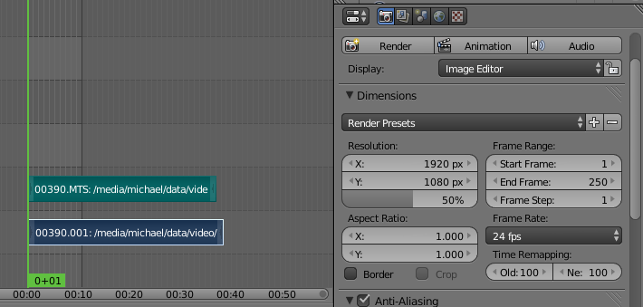
Дело в том, что звук в секвенсере измеряется в секундах, а видео в кадрах. Пока мы не настроим верно отношение количества кадров в секунду, видеоряд не будет совпадать со звуковым.
В других монтажных столах, возможно, видео при вставке автоматически преобразовывается, убираются или вставляются кадры, чтобы соответствовать тому FPS, что задан в настройках, но в блендере это не так.
Если вы столкнулись с этой проблемой, задайте нужное значение FPS, его можно выбрать в выпадающем списке Frame Rate. При этом звуковая дорожка должна удлиниться или уменьшиться, и концы дорожек должны совпасть (±пару кадров). (На деле бывало смещение в несколько кадров, когда видеоряд при записи на камере автоматически разбивался на разные файлы, чтобы соблюдать лимит размера файла, который можно записать на флешку. В таких файлах разделение звука может не совпадать с разделением видео, но в сумме они должны образовать почти равные куски.)
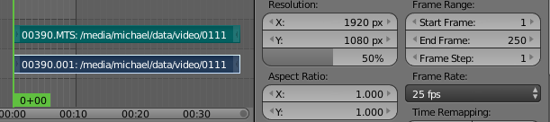
Я рекомендую с самого начала работы решить, какой FPS будет использоваться в вашем проекте. Настройте камеру на этот FPS, или, возможно, камера будет диктовать вам эти настройки.
Что делать, если вам нужно вставить видео с другим FPS?
Первый вариант — вы можете перекодировать видео с помощью сторонней программы, например, Avidemux, VirtualDub или подобных.
Но так же и в секвенсере Блендера есть инструменты, чтобы ускорить или замедлить видео, но все же рекомендую правильно подготовить видео — меньше будет возни.
Другое дело, если вы хотите ускорить или замедлить сам видеоряд в определенном месте, например, чтобы исправить медлительность актеров или замедлить эффектный момент.
Расширение или сужение частоты кадров будет происходить за счет того, что кадры будут выбрасываться (если FPS понижается) или дублироваться (если FPS повышается). Если с понижением FPS (т.е. ускорением видео) проблем не возникнет, то при повышении (соответственно замедлении видео) это может быть заметно. Например, если вы замедлите видео 24 кадра в секунду в полтора раза — это будет почти незаметно, в 2 раза — будет неприятное ощущение, в 3 раза — будет быстрое слайд-шоу. Поэтому, не стоит надеяться на чудо, что Blender сгенерирует промежуточные кадры в том месте, где вы, например, захотели показать полет сноубордиста в замедленной съемке.
Заранее снимайте в большом FPS, если ваша камера это умеет, и ускоряйте остальную часть видео. Если у вас нет «скоростной камеры», т. е. такое видео она снимать не может, попробуйте что-то типа SlowMoVideo — программа, которая пытается сгенерировать промежуточные кадры для эффекта замедленной съемки на больших FPS. Это не панацея, могут быть баги, протестируйте, как она сможет отработать ваш видеоряд на небольшом кусочке.
Speed control
Итак, ускорение и замедление (в разумных пределах) можно сделать и в Блендере. Для этого Вам понадобится Speed control. Вам нужно выделить подопытную дорожку, затем выбрать Add → Effect Strip → Speed control. Он работает в 2х режимах, по умолчанию на панели N активирован Stretch to input strip length:
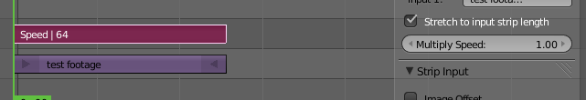
В этом режиме, чтобы ускорить видео, просто подвиньте конец подопытной дорожки (G) (или растяните, чтобы ускорить), кадры будут равномерно распределены, а не обрезаны.
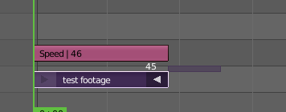
Стоит отметить, что двигать нужно именно конец, а не начало, начало обрежется.
Прежде, чем мы перейдем ко второму способу, нужно ответить на такой вопрос, что если нужно ускорить только часть дорожки? Помните, в 3й главе мы разбирали Hard Trim — Shift+K? Он нам пригодится. С его помощью вырежьте нужную область дорожки. Очень просто проверить, все ли правильно: попробовав уменьшить размер «вырезки», вы увидите характерный хвостик сверху, заканчивающийся в месте обрезки:
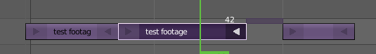
Осталось только лишь сдвинуть дорожки (G) и добавить Speed control (Add → Effect strip → Speed Control):
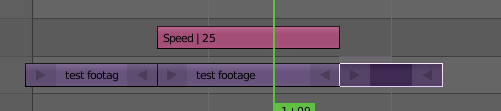
Кстати, чтобы не пытаться точно поместить дорожки без пропуска кадров, гораздо проще, наоборот, двигать их c наложением, Блендер обведет их красным:
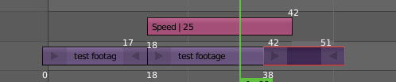
А когда вы отпустите — подвинет в бок, на нужное место. Так вы сэкономите время и нервы.
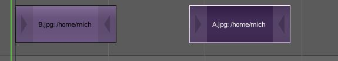
В довершение всего, было бы здорово запаковать это все в один «метастрип», чтобы было удобно это все двигать. Выделите все 4 стипа и нажмите Ctrl+G. Получится «метастип», который тоже можно резать и использовать для эффектов:
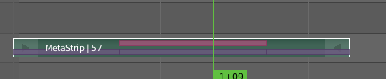
Вы можете редактировать содержимое «метастипа» нажав Tab. Распаковать «метастип» можно клавиатурным сочетанием Alt+G. Вобщем, это очень похоже на группировку нодов.
2-й режим Speed control
Если вы снимете галочку с «Stretch to input strip length», то вы получите возможность задавать относительную скорость видеоряда в Speed factor. 1 — соответствует оригинальной скорости, <1 — замедлению, а >1 — ускорению. К примеру, если у вас видео 25 кадров в сек, а в проекте у вас — 24, введите в это поле 25/24:
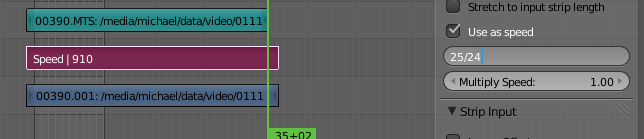
Видео будет останавливаться в нужном месте, а хвост можно обрезать и удалить.
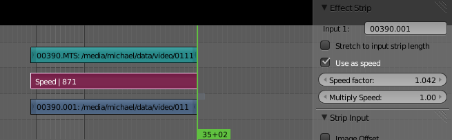
Но еще интереснее, если вы отключите галочку Use as speed. Speed facror превратится в Frame Number. Он соответсвует текущему кадру видеофрагмента. В этом режиме мы уже не управляем скоростью, а выбираем, какой кадр будет показан в какой момент времени. Вам нужно сделать анимацию этого параметра, в которой чем быстрее будет меняться это число, тем быстрее будет видео:
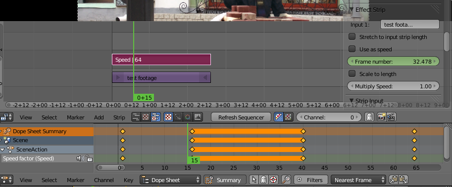
В этом режиме Blender может немножко тупить — нажимайте Refresh Sequencer
Мы уже познакомились с различными видами «Effect strip», их можно поделить на 3 типа:
Glow, Gaussian Blur и Transform как и Speed control принадлежат ко второй группе. Они берут 1 инпут в качестве исходных данных и проводят манипуляции над ним.
Есть еще также типы Add, Multiply, Substract, Alpha Over и пр., дублирующие режимы наложения. До 2.50 в блендере не было режимов наложения, поэтому они были нужны, но сейчас это уже «архаика». Но отказываться от них совсем, думаю, тоже не стоит — ведь их можно использовать для постройки более сложной схемы.
Glow
Glow — это эффект свечения. Может помочь передать вам засветку от взрывов, сильного света, или помочь сделать дешевый и банальный эффект сияния, который так любят лицезреть в «комнате невесты» под романтическую музыку. Не думаю, что с настройкой этого эффекта могут возникнуть проблемы — все достаточно просто.
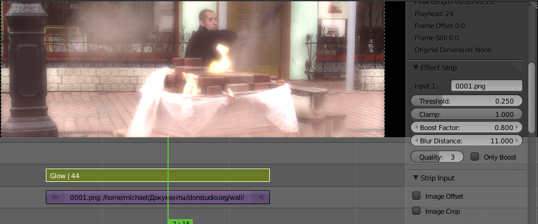
Gaussian Blur
Гауссан блюр добавили в версии 2.72. Этот эффект делает размытие картинки. Можно отдельно по вертикали или горизонтали:
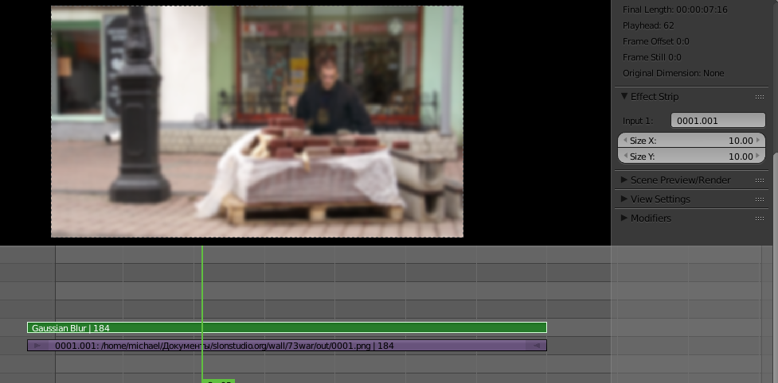
Кстати, на таком фоне текст смотрится интереснее и читабельнее.
Вы можете анимировать радиус размытия, чтобы сделать эффект выхода изображения из фокуса. Совмещая с эффектом переходов можно собрать переход через потерю фокуса, когда картинка размывается, незаметно переходит в другую размытую картинку, которая постепенно фокусируется:

Transform
Трансформ позволяет масштабировать, поворачивать и изменять видеоряд по вашему усмотрению. Единственное его ограничение — не получится бесконечно увеличивать картинку, даже если у нее большое исходное разрешение — он использует не оригинальный файл, а то, что выдает «инпут» на выходе. Поэтому, если задумано большое увеличение — сделайте его в нодовом редакторе. В следующем примере попробуем изучить, что можно сделать с помощью Transform. Сделаем плавный наплыв текста на фоне видеоряда.
Добавим видео, затем картинку с текстом, после чего на текст навесим Transform (Add → Effect strip → Transform)
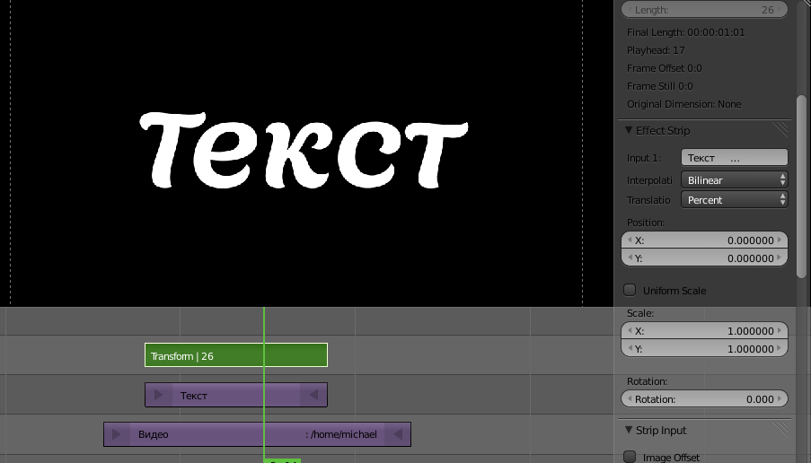
Нас интересует параметр Scale. Нажмем галочку Uniform Scale — вместо X и Y у нас будет один параметр, управляющий масштабированием по обеим осям.
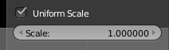
Сделаем анимацию его, и убедимся, что текст постепенно увеличивается:
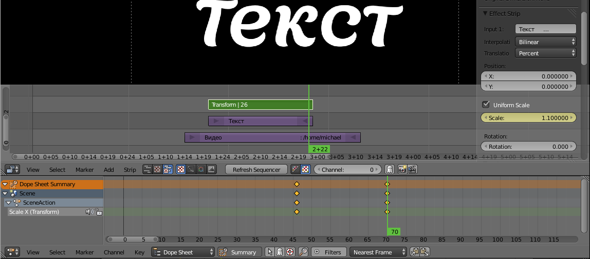
Чтобы текст был поверх видео, включим нужный режим смешивания у дорожки Transform и добавим анимацию Opacity, для того, чтобы текст плавно появлялся и затухал:
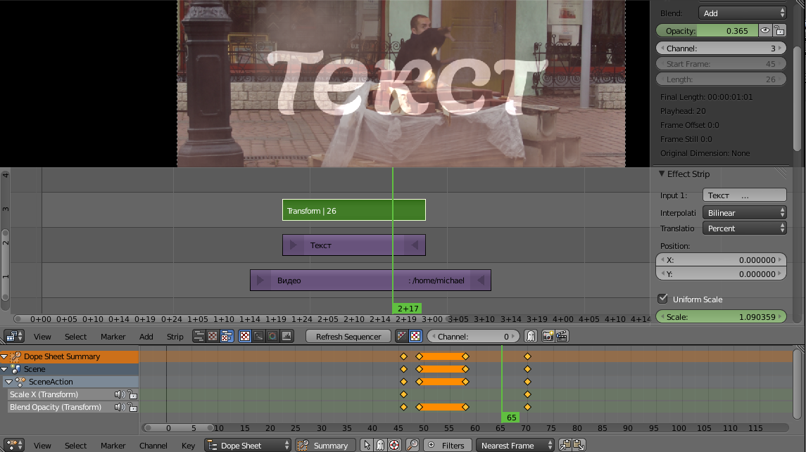
Звук можно добавить 2-мя способами:
В том и другом случае создается дорожка цвета морской волны:
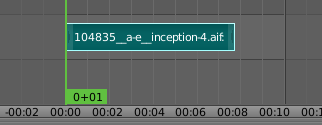
Для больших звуковых файлов рекомендуется включать Caching на панеле свойств N, чтобы быть уверенным, что звук никуда не съедет, если воспроизводить где-нибудь из середины. Еще очень полезная вещь — Draw Waveform, которая визуализирует звуковой ряд прямо на дорожке:
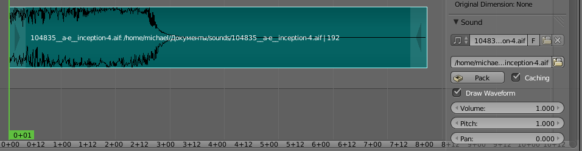
Дорожку со звуком можно резать, как любую другую — с помощью K или Shift+K, но я не советую резко обрезать звук, сделайте плавное затухание звука, с помощью анимации уровня громкости:
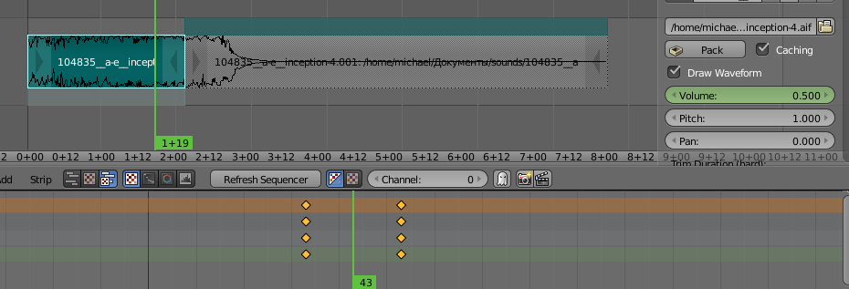
Также оформите переход из одной звуковой дорожки в другую. Пока одна дорожка постепенно затихает, вторая становится громче. Такой простенький DJ-микс.
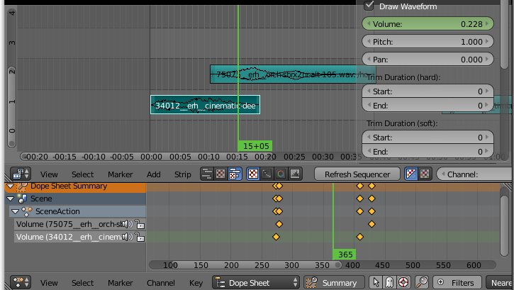
Параметр Pitch управляет скоростью воспроизведения, Pan — указывает в какой колонке играть моно-звук.
Дополнительные функции
9. Слой цветокоррекции
Мы добрались до цветокоррекции. Если вы снимали видео на камеру, вам наверняка захочется обработать видеоряд, чтобы он выглядел презентабельнее. Наверняка есть темные кадры, или ушел баланс белого. Посмотрим, какие способы цветокоррекции есть в секвенсере.
В первую очередь на панельке N вы найдете параметры Saturation и Multiply.
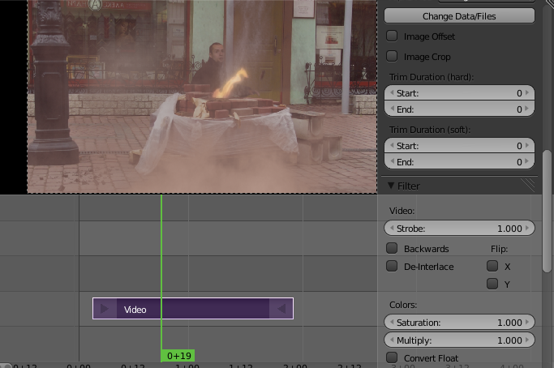
Saturation управляет насыщенностью, а Multiply — якростью. При повышении яркости образуются засветы. Некоторые монтажники предпочитают пользоваться особым графическим выделением под названием «Зебра», которое выделяет пересвеченные участки — там, где цвета вышли за максимальный диапазон. Вы можете включить «зебру» настройкой Show Overexposed (100- максимальная яркость):
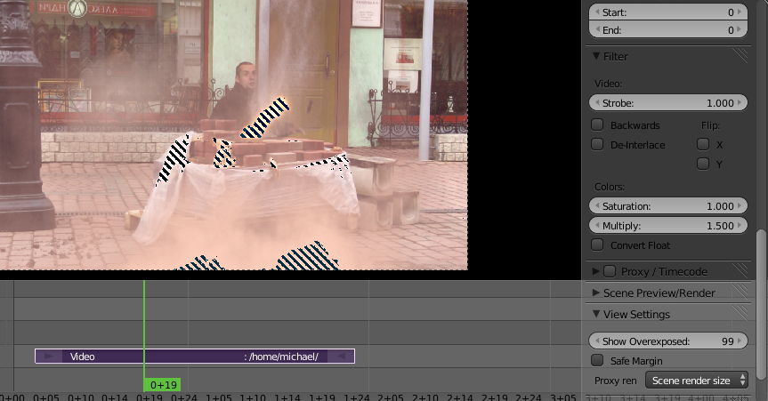
Кроме этих настроек есть модификаторы, которые позволяют выполнять другие операции с цветом.
Модификатор Curves
Модификатор Curves — это популярное средство цветокоррекции изображения, как в блендере, так и в 2D-редакторах. Пример повышения контраста в средних тонах:
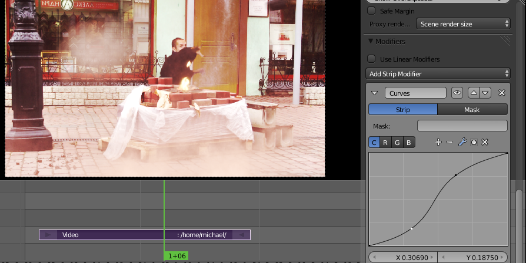
HUE Correct
Этот модификатор умеет смещать акценты с выбранных цветов. H выборочно смещает оттенок цвета, U — насыщенность, E — яркость
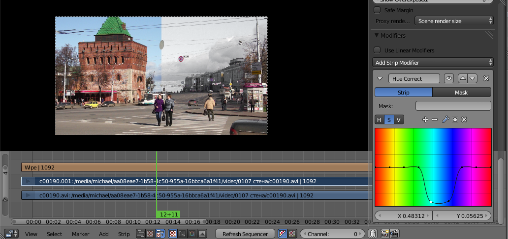
Color Balance
Этот модификатор — хорошее средство, чтобы задать цветовое настроение видеоряда. Смещает общую цветность отдельно по темным, средним и якрим тонам:
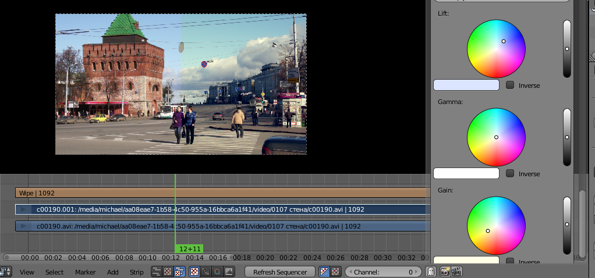
Слой цветокоррекции
Цветокоррекцию можно применять на дорожки, как мы уже рассматривали в примерах, но гораздо продуктивнее и быстрее использовать слой цветокоррекции. Это очень похоже на слой цветокоррекции в фотошопе. Добавьте слой цветокоррекции (Add → Effect Strip → Adjustment Layer) в секвенсер и растяните его так, чтобы он покрывал все необходимые дорожки. Вы можете изменять Saturation и Multiply, добавлять модификаторы к этому слою:
Есть три бонуса в использовании цветокорректирующего слоя:
Не забывайте, что параметр Opacity можно анимировать, а на кривые анимации можно вешать модификаторы. Так, добавив модификатор Random на анимацию прозрачности слоя цветокоррекции, вы сможете сделать эффект мерцания, как на старинной пленке.
Виньетка — это небольшое затемнение по краям кадра. Оно служит выделению центра кадра и помогает его целостности в наших глазах. Некоторые считают, что виньетирование делает изображение красивее.
Чтобы добавить виньетку, воспользуйтесь следующим методом. Сделайте в графическом редакторе такую картинку, соответствующую размерам кадра:
Добавьте виньетку в секвенсер, и, подобно слою цветокоррекции, разместите ее поверх всех дорожек. Режим смешивания Blend следует переключить на Multiply.
Можно отрегулировать степень виньетирования, изменив параметр Opacity. Виньетку можно размещать над и под слоем цветокоррекции — результат будет разный, подобно тому, как может измениться результат в зависимости от порядка модификаторов.
Часто по краям изменяют не только яркость, но и насыщенность изображения — попробуем сделать и это с помощью нашей виньетки. Сначала откройте файл с виньеткой, инвертируйте цвета и сохраните отдельной картинкой. Добавьте слой с маской под видеоряд, затем создайте слой цветокоррекции.
Иногда, чтобы растянуть дорожку с картинкой или слоем цветокоррекции, вам приходится скролить мышкой, чтобы увеличить масштаб секвенсера. При увеличении можно выделить стрелочку расширения дорожки. Но есть способ гораздо удобнее. Просто потяните вправо параметр Length у выбранной дорожки. Пока вы таким образом увеличиваете дорожку, на ней появятся стрелочки расширения дорожки.
Все что нам осталось — выбрать слой цветокоррекции, добавить модификатор Hue Correct. В нем есть параметр Mask — в нем выберите дорожку с инвертированной маской. Там, где цвет маски будет ярче, сильнее будет влияние модификатора. Опустите все цвета в S и увидите, как по краям цвет потеряет насыщенность:
Есть также переключатель Strip|Mask. Переключив на Mask, вы сможете использовать вместо дорожки блендеровские маски. Их можно делать в UV/Image Editor или Movie Clip Editor:
Кстати, видео, добавленное в Movie Clip Editor, можно добавлять в секвенсер из меню Add → Clip → … .
Вы можете столкнуться с проблемой, что при сдвиге Видео по времени, анимация маски остается на месте. Чтобы решить эту проблему, не двигайте ключи, есть способ лучше — можно добавить маску как слой, а потом двигать и резать ее вместе с видеорядом. Но прежде чем сделать это, зайдите на панель N в Movie Clip Editor и установите длину маски равной длине видео в кадрах:
После этого добавьте маску в секвенсер Add → Mask → … и используйте ее как обычную дорожку с маской:
Но для таких точных настроек я предпочитаю использовать уже нодовый редактор.
Слой сцены позволяет добавить в секвенсер результат рендера сцены или нескольких сцен. Разумно использовать его для анимированной графики, когда долго и муторно создавать отдельный файл и рендерить картинки, чтобы всего лишь сделать анимированный текст. Рассмотрим слой сцены на следующем примере:
Добавим необходимый видеоряд в секвенсер, и добавим поверх слой сцены Add → Scene → …. Перед добавлением убедитесь, что длины анимации хватит на текст. Лучше увеличить количество кадров в сцене до размеров видео.
Если вы увеличите количество кадров в сцене, выберите дорожку со сценой и выберите Strip → Reload Strips and ajust length (Shift+Alt+R)
Сцену надо подвинуть в начало, на первый кадр, иначе первью анимации в секвенсере не будет совпадать с 3D-View.
В этом примере я буду использовать режим наложения Add c белым текстом на черном фоне. Но если вы хотите, вы можете сделать прозрачный фон, для этого зайдите в настройки рендера Shading, параметр Alpha установите на Transparent:
Если вы не используете прозрачный фон, нужно установить цвет фона на черный в настройках мира:
Сделайте анимацию и настройте камеру. Я сделал анимацию размера блока текста и межбуквенного расстояния:
В материале установим белый цвет и параметр Shadless

После этого нажмите Refresh Sequenser, чтобы обновились кадры со сценой. У такой простой сцены почти мгновенный рендер, поэтому рискнем отключить Open Gl Preview в настройках Scene Preview/Render и вместо серенького текста появится белый:

Все, что осталось — повторить 3 главу этого гида — установить слою режим смешивания Add, и сделать анимацию Opacity.
Там, где нулевая прозрачность, можно отрезать (K) и удалить лишнее (X).
А если вы подвинете дорожку по времени, кадры в ней тоже сдвинутся вместе с дорожкой, у вас получится сдвиг с реальной анимацией:
12. Блок (lock) и видимость (mute)
В этой главе и далее мы разберем некие дополнительные функциональности, которые можно назвать «полезными, но не обязательными». Обратите внимание на 2 иконки, рядом с параметром Opacity:
Глазочек управляет видимостью дорожки. Мы уже касались ее, когда разбирали цветокоррекцию. Нажав эту кнопку, можно временно отключить видимость дорожки, рендер будет происходить, как будто ее нет. Выключенная дорожка обводится пунктиром в секвенсере:
Можно выключить сразу несколько дорожек нажав H. Как вы уже догадались, Alt+H включает обратно видимость дорожки — команды аналогичны скрытию объектов в 3D-View.
Скрытые дорожки так же не видны и в рендере. Не забывайте включать нужные дорожки перед рендером.
Вторая кнопка — замочек блокирует дорожку от случайных манипуляций с ней. Очень удобно в больших проектах блокировать дорожки, которые «обрели свое место», чтобы случайно не сдвинуть их относительно звука. Заблокированные дорожки покрываются косыми полосочками, чтобы сразу видеть, что их нельзя сдвинуть:
Как и у скрытия, у блокировки есть аналогичные хоткеи: Shift+L для блокировки и Shift+Alt+L для снятия блокировки. Если вы забыли горячие клавиши, просто загляните в меню, там все есть:
Прокси в секвенсере — это JPG файлы, которые используются, как замена реального видеоряда или последовательности PNG-картинок. Прокси обычно меньше реального кадра и в «быстром» формате (JPG) поэтому они грузятся быстрее.
Включить отображение прокси можно в 3 этапа:
1. Выберите подопытную дорожку, и на панельке N включите Proxy/Timecode:
Выберите размер прокси в процентах от реального кадра. Если у вас есть «быстрый» диск, было бы неплохо настроить Proxy Custom Directory на него:
2. Выберите из меню Strip → Rebild Proxy and timecode indexes. Процесс создания картинок будет виден внизу:
3. На панельке N разверните View settings и выберите Proxy render size равное тому, что вы установили ранее.
Если вы увидите заметную пикселизацию картинки — значит все сделано правильно. Прокси быстрее грузятся и проигрываются на Alt+A, а из-за того, что их размер меньше, меньше времени уходит на обработку эффектами и модификаторами.
Рендер будет происходить из оригинальных изображений, не взирая на прокси. Нет нужды отключать прокси перед рендером.
14. Каналы.
Channel — это позиция дорожки в секвенсере по высоте. Начинается снизу от 1.
В настройках окна секвенсера тоже есть параметр Channel, по умолчанию он равен нулю. Ноль означает, что эта настройка выключена. Переключив ее на другую цифру, вы настраиваете превью показывать только те дорожки, которые находятся не выше этого числа.
На этом скриншоте я расположил видео с 2х камер в каналы 1 и 2. У них одинаковый FPS, и они идут паралельно. Затем я настроил 2 секвенсора с типом Preview соответственно на эти каналы:
Таким образом, можно видеть, что происходит в обоих видео и выбирать, какое видео лучше показать в данный момент.